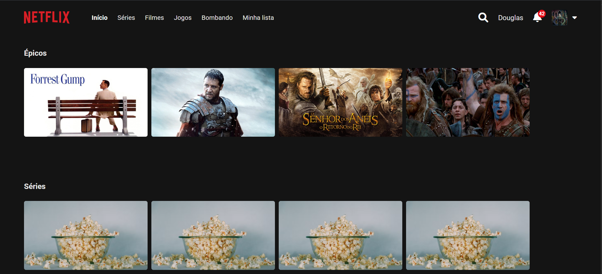

Meus Projetos
Confira abaixo os principais projetos desenvolvidos durante os meus estudos. Clique nos títulos para acessar os repositórios no GitHub:

Netlura ➔
Interface inspirada na Netflix criada na Imersão Alura. Desenvolvida usando IA e engenharia de prompt para otimização das tags e estilização.
Sistema de Biblioteca ➔
Gerenciador de acervos desenvolvido em C. Aplicação prática de registros (structs), vetores estáticos, ordenação de dados e persistência em arquivos binários.